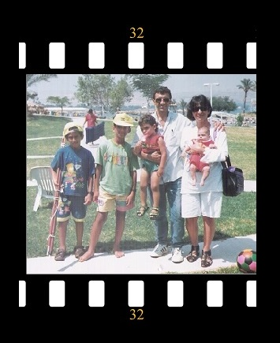
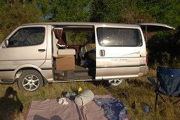
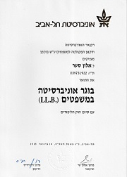
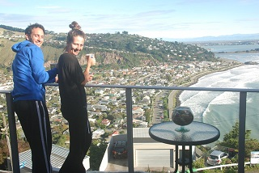
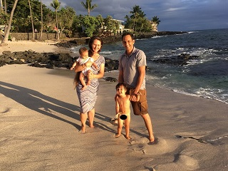
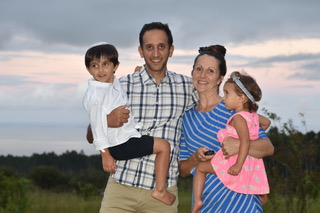

Early childhood
I was born in Petach Tikva, Israel on 10/08/1984. My father's name is Arie Saar
[65] and my
mother's name is Irit [62] Saar. I am the
second out of four siblings in my family [3 boys and a girl]. My parents are divorced. I have one older
brother, one younger brother and one younger sister. Eldad[39], Eithan[32] and Ayelet[29] respectively. My
parents and all my siblings live in
Israel.
At
first my family lived In Petach Tikva and when I was a three years old we moved to a town called Ariel. I
grew up in Ariel and had a pretty happy
childhood. Later when I was 11, we moved to be closer to my father's work into a city called Kiryat-Ono
[which I did not appreciate at all at the time]. We moved from a small town into the suburbs of Tel-Aviv
which is basically one big metropolitan.
I attended high school in Kiryat Ono, with focus on Sociology and Economics. During that time I played
soccer in a semi-professional team and enjoyed reading, hiking and hanging out with friends. Shortly after I
graduated from high school I was drafted to the I.D.F (Israel Defence Forces).

Eitan, Eldad and Alon
Military Service
Israel has a mandatory military service and so I was drafted for three years when I was about eighteen and a half (men serve for three years and women for 2 years). At first I was very enthusiastic about it and did my best to get accepted to one of the elite units but unfortunately for me that did not go well. Yet, I still felt that I am serving my country and tried to do the best I can in the placement I received. I was drafted to a combatant unit and became a combatant medic. I was later sent to a squad leader course and finally became a sergeant. I was pushed and encouraged to become an officer but after spending two years in the military, I realized that I don't want to make a career in the military [especially not in the unit in which I was serving]. After I was discharged, I kept serving as a reservist and was called for duty a number of times. Although I choose not to make a career in the military, I learned a lot from that experience.
Traveling

After I was discharged from the military, I took the route that most young Israeli men/women take and went traveling. The intensity of the military service and life in Israel combined with natural curiosity, encouraged me to go and travel. After a short period of working in random jobs and saving money, I flew to central America and traveled through Mexico, Honduras and Guatemala where I met my future wife - Georgina Rhode (Geroge). We traveled together for a short period of time and then I flew back to Israel and she flew back to New Zealand where she was from.After a few months of emails and skype calls, I decided to fly to NZ to meet with the person I fell in love with. I ended up living with George in NZ for about a year and half. During that time we traveled NZ for a short period in a van that we converted to a camper. George was attending university and I started thinking about my future and decided to go back to Israel and start University and so sadly we broke up (we were separated for a few years but after 5 years George came to visit Israel and we met again).
University

After I left NZ, my traveling episode ended. I went back to Israel and decided that I want to enroll into university. In Isreal enrollment and acceptance to university is based on the S.A.T score combined with the high school GPA. My high school GPA was not great but I decided to take the S.A.T and see where I stand. I started studying for my S.A.T. and took the exam twice since my initial grade was not satisfactory. I was working on getting accepted to Law school in Tel-Aviv university which is one of the top 3 universities in Israel. The problem was that I also needed to improve my high school GPA. There was a possibility to enroll to a private college which has lower acceptance requirements but also charges three times more for tuition than university. On top of that, the education quality is supposedly not as good as what I would receive in one of the top three, not to mention the status that comes with a university degree. Based on these considerations, I decided to make an extra effort to improve my high school GPA. And so, after some long an intense studying period, I managed to improve my GPA and get the needed score that got me accepted to Law school. I decided to try and get a economics minor on top of my law school degree (a decision that did not go so well for me). I studied very hard for 4 years and eventually graduated with an LL.B from Tel-Aviv university. However, I did not manage to complete my Economics minor and the decision to try and get it done simultaneously resulted in low grades that I could have achieved If I was to focus on my law degree. Nevertheless, I learned an important lesson about overreaching and failure.My Family



I am married to Georgina Galia Rhode. We knew each other for about 10 years
before we got married, and we were separated for about 5 years before we got back together. Five years after
we broke up in NZ, George came for a visit in Israel and we've been together since then.
We had two weddings, one in Hawaii in 2014 with a single
participant excluding the bride
and groom
(a
celebrant). The second one was in a jewish ceremony in 2017 in Israel.
We now have 2 children and we are expecting another one soon B"H. Lior is 4.3 years old. He loves cars and
dinosaurs and is very energetic, smart and curious. Elah is 2.6 years old. She loves listening to stories,
singing songs (though she can't talk yet), is very opinionated on everything and likes to do things in
her own way. Her favorite activity since she can walk is climbing on tables and our kitchen counter.
We currently live on the Hamakua coast in Hawaii island. Our home is located in our Hobby, off grid farm. We
also have in our family a herd of sheep, a couple of cows [Daisey and Tiger], a couple of goats (Brownie and
Orio),
chickens and one duck. We enjoy this life style very much and try to stay on top of regular maintenance and
routine upkeep of the place (though it gets harder with small children).